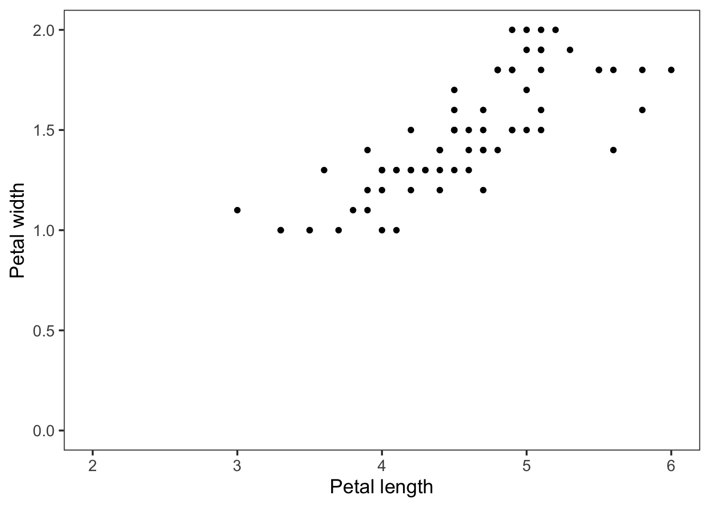

Chapter 6 Introduction to scatter plots in R/ggplot2
6.1 Setup
In this chapter, we will use the {ggplot2} package for generating scatter plots. This package is part of the {tidyverse} package, so we will load that first:
library(tidyverse)We’ll use the iris data set that comes with R.
data("iris") #import like this is possible for R's inbuilt datasets
head(iris)## Sepal.Length Sepal.Width Petal.Length Petal.Width Species
## 1 5.1 3.5 1.4 0.2 setosa
## 2 4.9 3.0 1.4 0.2 setosa
## 3 4.7 3.2 1.3 0.2 setosa
## 4 4.6 3.1 1.5 0.2 setosa
## 5 5.0 3.6 1.4 0.2 setosa
## 6 5.4 3.9 1.7 0.4 setosasummary(iris) #dataset is present in the workspace with the dataset name## Sepal.Length Sepal.Width Petal.Length Petal.Width
## Min. :4.300 Min. :2.000 Min. :1.000 Min. :0.100
## 1st Qu.:5.100 1st Qu.:2.800 1st Qu.:1.600 1st Qu.:0.300
## Median :5.800 Median :3.000 Median :4.350 Median :1.300
## Mean :5.843 Mean :3.057 Mean :3.758 Mean :1.199
## 3rd Qu.:6.400 3rd Qu.:3.300 3rd Qu.:5.100 3rd Qu.:1.800
## Max. :7.900 Max. :4.400 Max. :6.900 Max. :2.500
## Species
## setosa :50
## versicolor:50
## virginica :50
##
##
## You see that you have 5 columns, with measurements of iris flowers in three species.
6.2 Scatterplots
6.2.1 Defaults
We’ll use the length and widths of the petals for the x- and y-axis. The ggplot() function is used to generate the plot. But we need to define the data for x and y within aes(). Finally, we need to define the “geometry” that is used for plotting. Here we use points and to do so, we need the function geom_point(). Note that the different functions are combined with the plus sign: +. For clarity, I use a new line after each function:
Let’s make a first plot:
ggplot(data = iris) +
aes(x=Petal.Length, y=Petal.Width) +
geom_point()
6.2.2 Themes
This looks pretty good, but we can improve both the visualization and the layout. The layout can be changed with theme(). This enables full control over every element of the plot and the options can be overwhelming. Luckily, there are a few standard themes that you can use. This is an example with theme_bw(). Within the themes you can change the font size by defining base_size:
ggplot(data = iris) +
aes(x=Petal.Length, y=Petal.Width) +
geom_point() +
theme_bw(base_size = 14)There are different themes that you can try: theme_light(), theme_classic, theme_linedraw() and theme_minimal(). You can replace the original theme in the chunk above and rerun to the effect. When axes are not informative, (e.g. NMDS, t-SNE, uMap plots), you may remove theme completely with theme_void():
ggplot(data = iris) +
aes(x=Petal.Length, y=Petal.Width) +
geom_point() +
theme_void(base_size = 14)This removes all theme elements and you can add them back with the theme() function:
ggplot(data = iris) +
aes(x=Petal.Length, y=Petal.Width) +
geom_point() +
theme_void(base_size = 14) +
theme(axis.title.x = element_text(color = "black")) +
theme(axis.title.y = element_text(color = "black", angle = 90)) +
theme(axis.line.x.bottom = element_line(color="black", linetype = 1, size=.5)) +
theme(axis.line.y.left = element_line(color="black", linetype = 1, size=.5))The code above shows the great level of control over the layout with theme() and that every detail can be controlled. This is however quite a daunting process and therefore it is much easier to stick with the predefined themes and modify only a couple of aspects. For instance, we can start with theme_bw() and remove the grid:
ggplot(data = iris) +
aes(x=Petal.Length, y=Petal.Width) +
geom_point() +
theme_bw(base_size = 14)+
theme(panel.grid = element_blank())Since the default ggplot2 theme is not ideal, you may set another theme as your default. All subsequent plots (whether you generate from an Rmarkdown file or from the console) will have this theme:
theme_set(theme_bw(base_size = 14))6.3 Intermezzo: Plots as objects
It is quite common in ggplot to assign (using <-) a basic plot to an ‘object’ and after that apply/add functions to the object to modify it. This allows to quickly try a couple of variations in the command line. Let’s assign the plot shown before to the object p:
p <- ggplot(data = iris) +
aes(x=Petal.Length, y=Petal.Width) +
geom_point() +
theme_bw(base_size = 14)+
theme(panel.grid = element_blank())Note that there is no output. To display the plot we can call p:
p
6.4 Modifying plots
6.4.1 Axis labels
We can use the new object p to modify the axis labels:
p + labs(x="Petal length", y="Petal width")
To store these changes in a new object, let’s say p2 (but you can also override p) we need to assign the changes as follows:
p2 <- p + labs(x="Petal length", y="Petal width")To view the plot we can call p2:
p2
6.4.2 Scales and ranges
To set the limits of a plot, the xlim() and ylim() functions can be used:
p2 + xlim(c(2,6)) + ylim(c(0,2))## Warning: Removed 77 rows containing missing values (geom_point).
Note that we need a vector to supply the lower and upper limit of the axes. We can use NA to set the limit automatically:
p2 + xlim(c(2,NA)) + ylim(c(0,2))## Warning: Removed 73 rows containing missing values (geom_point).Log scale can be applied (here obly to the x-axis):
p2 + scale_x_log10()6.4.3 Aesthetics & Geometries
Thus far, we have plotted the Petal.length and Petal.Width data as positions on the x or y-axis. This is defined in the aes() function. There are other ways to visualize data, for instance by color, shape of a symbol or its size. These so-called aesthetics can be applied in the ggplot function. The idea is that we ‘map’ data to an aesthetic. This is made explicitly in the ggplot function when we write it down in full (note that we can leave out the data = and mapping = and ggplot will still understand what we are trying to do):
ggplot(data = iris, mapping = aes(x=Petal.Length, y=Petal.Width))By itself, this call is not sufficient to generate the plot. We need to define a geometry for plotting, e.g. geom_point():
ggplot(data = iris, mapping = aes(x=Petal.Length, y=Petal.Width)) + geom_point()
Let’s look again at the iris dataset:
head(iris)## Sepal.Length Sepal.Width Petal.Length Petal.Width Species
## 1 5.1 3.5 1.4 0.2 setosa
## 2 4.9 3.0 1.4 0.2 setosa
## 3 4.7 3.2 1.3 0.2 setosa
## 4 4.6 3.1 1.5 0.2 setosa
## 5 5.0 3.6 1.4 0.2 setosa
## 6 5.4 3.9 1.7 0.4 setosaThere is a column with data on the Species. We can now map that data on an aesthetic, for instance color:
ggplot(data = iris, mapping = aes(x=Petal.Length, y=Petal.Width, color=Species)) + geom_point()And we can also map that to the size of the symbols:
ggplot(data = iris, mapping = aes(x=Petal.Length, y=Petal.Width, size=Species)) + geom_point()## Warning: Using size for a discrete variable is not advised.The mapping of data on different aspects of the plotted objects (=geometries) is a very powerful concept that enables plotting of multiple parameters at the same time. To show an extreme example, (and this is probably not helping the interpretation of the data), we can display the data of all 5 columns in the iris dataset in a single plot:
ggplot(data = iris, mapping = aes(x=Petal.Length, y=Petal.Width, size=Sepal.Length, color=Species, alpha=Petal.Length)) + geom_point()
The properties of the geometry can also be controlled independent from the data. Here’s an example where the Species is shown as color (controlled by the aes() function) and the properties of the dots is defined in the geom_point() function:
ggplot(data = iris, mapping = aes(x=Petal.Length, y=Petal.Width, color=Species)) +
geom_point(size=5, alpha=0.5)The shape can also be changed and this is defined by a number. An example is given below:
ggplot(data = iris, mapping = aes(x=Petal.Length, y=Petal.Width, color=Species)) +
geom_point(size=5, alpha=0.5, shape=15)For more information on the possible shapes and their corresponding numbers see this page
6.5 Legends
Legends are automatically added by ggplot. However, you may not always need a legend. The legend can be removed as follows:
p <- ggplot(data = iris, mapping = aes(x=Petal.Length, y=Petal.Width, color=Species)) +
geom_point(size=5, alpha=0.5)
p + theme(legend.position = "none")The appearance of the legend can be fully controlled with theme(). We can change the title, position and color of the text:
p + theme(legend.position = "top", legend.justification = "right") +
guides(color = guide_legend(title="Type:"))6.6 Lines and trends
You can plot lines between the data per Species:
p + geom_line()That’s not very informative, but this could be useful for some types of data, e.g. when time is depicted on x-axis.
If we were interested in trends, a trendline can be added (“lm” is an abbreviation for linear model):
p + geom_smooth(method = "lm")## `geom_smooth()` using formula 'y ~ x'Interestingly, it generates individual trend lines for the different Species, because we mapped the Species to a color. The trendline inherits the aesthetics that are defined in the ggplot() call. If we want to have a trendline for the combined data and keep different color for the Species, we can define the aesthetic within geom_line(), instead of ggplot():
ggplot(data = iris, mapping = aes(x=Petal.Length, y=Petal.Width)) +
geom_point(aes(color=Species), size=5, alpha=0.5) +
geom_smooth(method = "lm", color="black")## `geom_smooth()` using formula 'y ~ x'Note that the plot consists of multiple layers and that the last layer is the one that’s on top. So if we want to plot the data on top of the trendline, we can alter the order of geom_point() and geom_smooth():
ggplot(data = iris, mapping = aes(x=Petal.Length, y=Petal.Width)) +
geom_smooth(method = "lm", color="black") +
geom_point(aes(color=Species), size=5, alpha=0.5)## `geom_smooth()` using formula 'y ~ x'